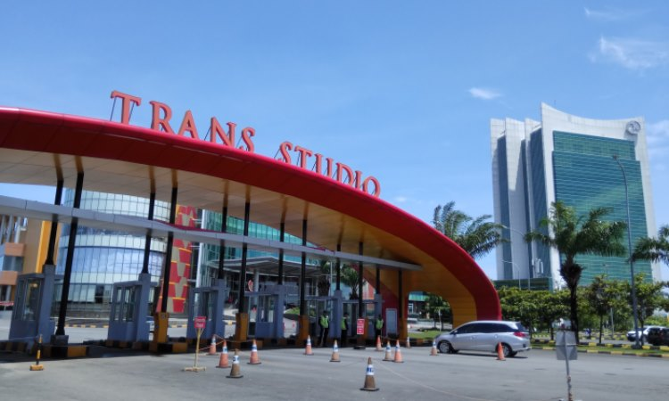
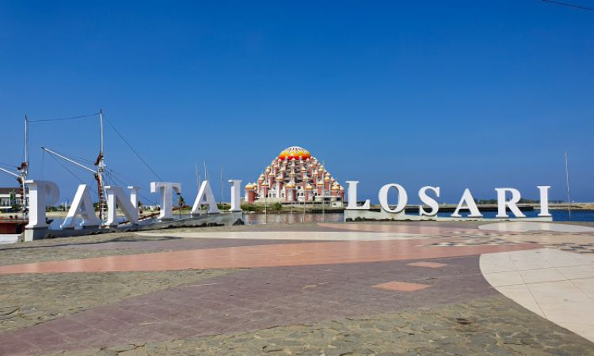
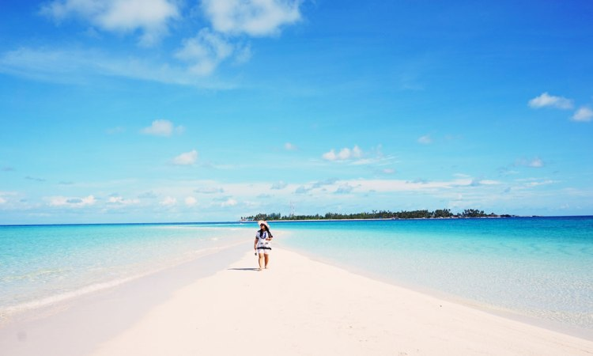
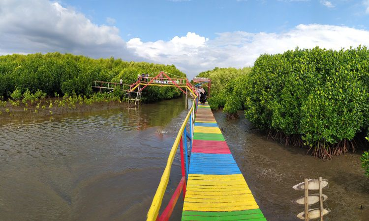
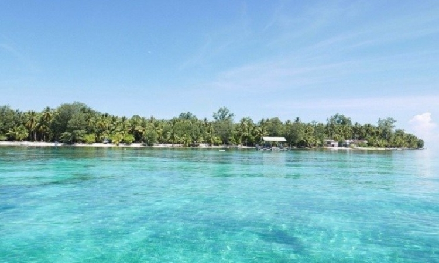
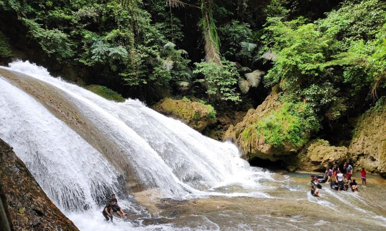
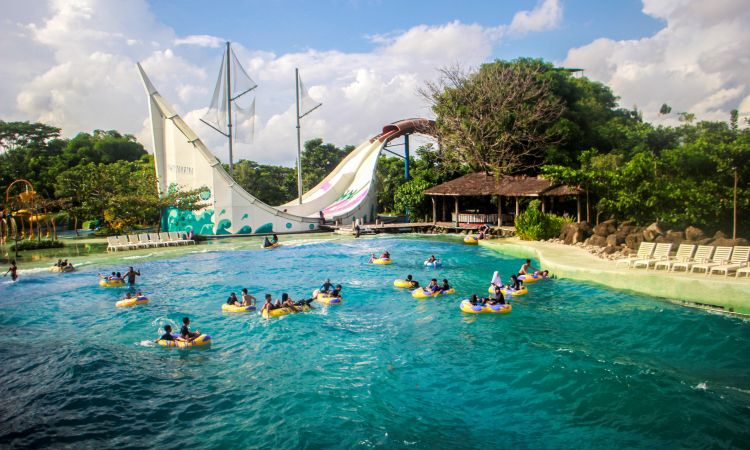
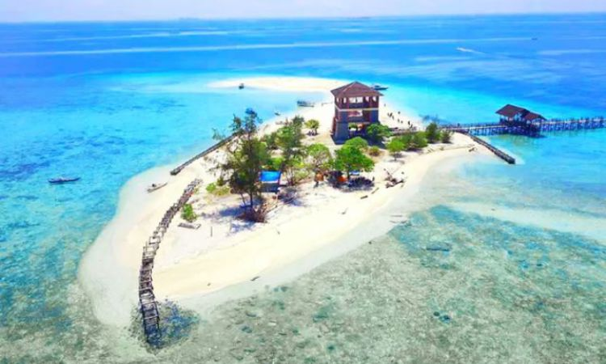
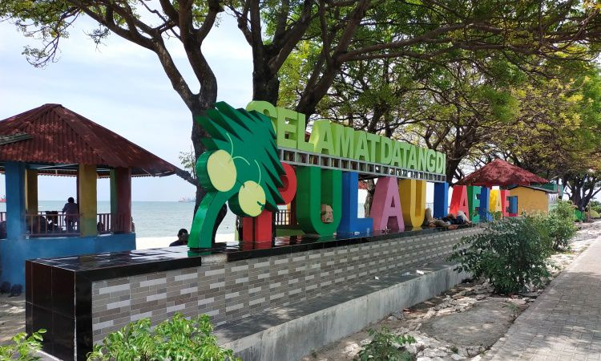

Wisata
1. Trans Studio

Untuk pembukaan mengenai tempat wisata yang ada di kota Makassar Provinsi Sulawesi Selatan ini akan di buka dengan Trans Studio. Tempat ini meruapakan salah satu wahana wisata dengan aneka fasilitas yang ada di dalamnya.
Tentunya tempat ini merupakan salah satu Tempat Wisata di Makassar yang memiliki kulaitas skala Internasional. Wisata ini cocok untuk Anda kunjungi bersama keluarga Anda terutama dengan anak Anda. Mengingat selain merupakan
tempat bermain tempat ini juga menjadi sarana belajar bagi anak Anda. Bermain dan belajar tentunya sangat baik untuk perkembangan anak Anda.
2. Pantai Losari

Merupakan ikon wisata dari kota ini yang sudah sangat di kenal baik oleh masyarakat lokal pada umumnya. Ataupun oleh masyarakat Internasional, yang unik dari pantai ini adalah konsep tata ruang nya. Pada beberapa pantai pada
umunya pemandangan yang akan Anda temui adalah suasana yang masih alami. Akan tetapi pada pantai ini Anda akan menemui konsep yang berbeda mengingat pada tempat ini Anda akan melihat banyak beton. Berfungsi sebagai penahan
gelombang sekaligus abrasi air laut yang ada di tempat ini. Tempat ini di padati pengunjung di kala sore hari atau pun pagi hari saat matahari mulai muncul dan tenggelam, tempat ini juga menjadi spot favorit memancing.
3. Pulau Gusung

Selain pantai yang indah banyak terdapat pada kota ini Anda juga dapat mencoba salah satu Objek Wisata di Makassar yaitu Pulau Gusung. Untuk menyeberang dan menuju pulau ini menggunakan perahu yang telah di sediakan.
Perjalanan menuju tempat ini sendiri akan memakan waktu selama kurang lebih 15 menit menggunakan perahu. Pulau yang terbentuk akibat tumpukan pasir yang semaki membesar setiap waktunya ini. Menjadi tempat wisata baru yang bisa
Anda kunjungi bersama keluarga. Tempat ini juga menjadi spot memancing yang menyenagkan loh kawan.
4. Ekowisata Mangrove Lantebung

Destinasi wisata yang satu ini juga termasuk wisata hits yang wajib anda kunjungi ketika berada di Kota Makassar. Kehadiran hutan bakau yang dipadu oleh jembatan warna warni ini menghadirkan panorama yang indah. Terlebih lagi
jika anda mengunjungi tempat ini menjelang matahari terbenam. Jembatan yang dibangun sepanjang 270 m ini juga dilengkapi 2 pondokan kecil untuk bersantai. Ekowisata mangrove ini menghadirkan pesona alami yang sangat menarik
untuk berfoto. Keindahan mangrove yang sangat lebat yang dipadu dengan jembatan pelangi membuat para wisatawan tertarik untuk mendatangi tempat ini. ekowisata yang berada sekitar 2 km dari laut ini tentu menghadirkan perpaduan
keindahan alam yang sangat sempurna.
5. Pulau Kayangan
Memiliki nama pulau kayangan di karenakan keindahan dari pulau yang satu ini. Sudah banyak di kenal dan diakui oleh banyak wisatawan baik dalam negeri maupun yang dari luar negeri. Pada tempat ini sudah di kembangkan
sedemikian rupa hingga menjadi salah satu destinasi wisata yang menyenangkan. Hal tersebut terbukti dengan terdapat sebuah kafe dan tempat yang ada di tengah dari pulau ini. Bisa di bayangkan bukan bagaimana nikmatnya ketika
menikmati makanan di tengah pulau yang indah dengan di kelilingi air. Serta suara deburan ombak yang selalu terdengar seakan menjadi musik di telinga kita.
6. Pulau Kapoposang

Masih belum beranjak dari bahasan mengenai tempat wiata berupa pulau yang ada di kota Makassar. Tempat selanjutnya yang memiliki panorama yang tidak kalah indah dan menarik yang dapat Anda kunjungi adalah Pulau Kapoposang.
Setiap pulau memiliki keebihan dan keinstimewaannya sendiri yah kawan. Untuk pulau ini memiliki kelebihan pada terumbu karang yang masih terawat dan indah. Pada bagian dasar launtnya, tempat ini menjadi salah satu tempat yang
paling wajib di kunjungi. Jika Anda salah seorang yang menyukai olah raga diving.
7. Taman Nasional Banti Murung

Taman nasional atau hutan lindung daerah ini memiliki bentang alam yang sangat luas. Ekosistem baik flora maupun fauna yang ada di dalamnya hingga saat ini masih terjafa dengan baik. Serta terdapat beberapa tumbuhan serta
hewan endemik yang masih ada dan mendiami tempat ini. Ketika musim kemarau tiba banyak peneliti dari sejumlah daerah maupun peneliti asing. Rela datang kemari untuk meniti beberapa jenis kupu-kupu pada daerah ini. Mengingat
beberapa jenis tersebut masih merupakan spesies baru.
8. Bugis Waterpark

Pecinta wahana rekreasi memang harus mencoba wisata yang ada di Kota Metropolitan ini. Berbagai wahana luar biasa seperti multi slide & free fall, kids pool, blackhole & rafting slide, body slide, whirpool dan lainnya bisa
anda nikmati disini. Berbagai wahana dengan berbagai atraksi seru dan menarik ini tentu dapat menghadirkan pengalaman terbaik untuk anda. Selain itu, tempat wisata ini juga sangat luas. Anda bahkan bisa memasuki berbagai zona
seperti Kampong Rilau, Goa Batu Kalubampa dan Alabuang untuk memperoleh sensasi yang menyenangkan. Wisata ini bahkan sangat cocok untuk dinikmati bersama keluarga maupun teman dan saudara. Anda bahkan bisa mengajak anak-anak
untuk belajar dan bermain di Bugis Waterpark ini.
9. Pulau Kodingareng Keke

Kembali lagi membahas pulau yang ada di tempat ini kali ini pulau yang akan di bahas adalah pulau kodingareng keke. Untuk jarak dari pusat kota Anda harus melakukan perjalanan selama kurang lebih 20 menit. Tempat ini merupakan
sebuah pulau yang tidak berpenghuni. Tempat ini sering kali di gunakan oleh para nelayan yang tengah singgah untuk beristirahat. Namun meskipun begitu pemandangan yang di miliki dari tempat ini tidak bisa Anda pandang sebelah
mata. Serta kekayaan bawah airnya yang masih terawat dan terjaga hingga saat ini.
10. Pulau Lae-Lae

Jangan pernah bosan membahas mengenai pulau yang ada di Makassar, mengingat pada derah ini memiliki beberapa pulau. Dengan keunikan dan ciri khas masing-masing yang bisa Anda jelajahi dan temukan sendiri keindahannya. Termasuk
salah satu nya pulau yang satu ini juga memiliki hal tersebut. Pulau ini memiliki ukuran cukup besar dari beberapa pulai lainnya yang telah di bahas sebelumnya. Serta pulau ini memiliki penduduk di atas 2 ribu jiwa, nantinya
ketika mengunjungi tempat ini. Anda bisa bersantai sembari menyewa gazebo yang telah di sewakan untuk Anda.